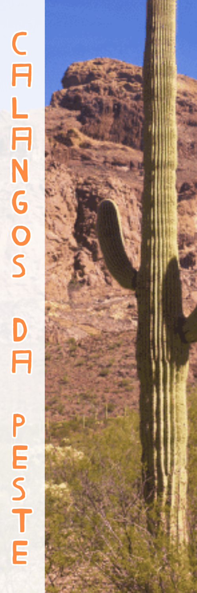
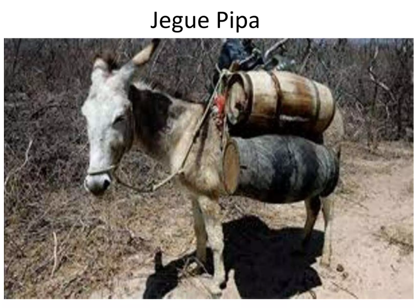
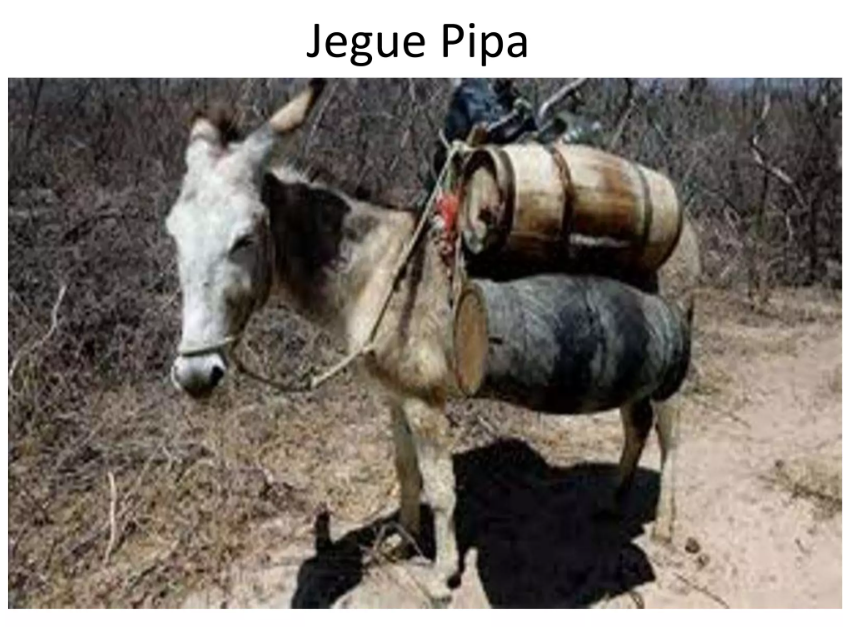

MEMES DA CAATINGA

 


 UM POUCO SOBRE A CAATINGA
UM POUCO SOBRE A CAATINGA
Caatinga é o único bioma exclusivamente brasileiro. É marcada pela ocorrência do clima Semiárido, quente e seco, e também por espécies endêmicas altamente adaptadas à seca.
 FAUNA & DESERTIFICAÇÃO
FAUNA & DESERTIFICAÇÃO
A fauna da Caatinga é bastante diversificada, mas não tão conhecida, havendo diversas espécies de animais endêmicos. Os animais que se encontram na região abrangida por...
 DESAFIOS
DESAFIOS
Caatinga, único bioma exclusivamente brasileiro, enfrenta uma série de ameaças que comprometem sua biodiversidade e a qualidade de vida das cerca de 30 milhões de pesso...